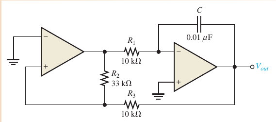
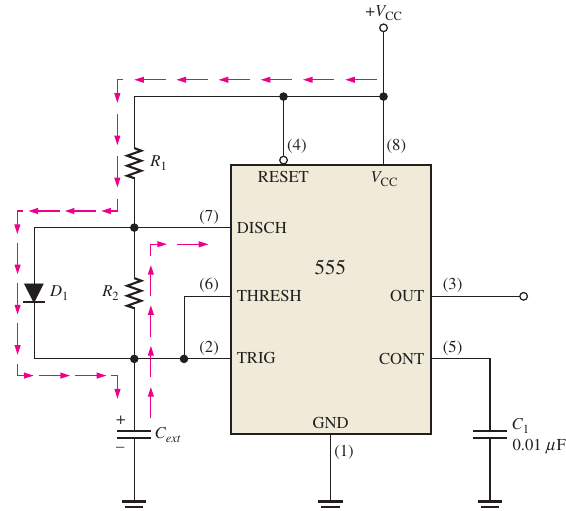

Clapp: Colpitts with an extra series capacitor in the inductor branch
Crystal: series or parallel resonance, very stable
📖 Explanation for beginners
The LC tank sets the frequency; the C1/C2 ratio sets the gain required.
Part 2 · Methods
The relaxation triangular-wave generator

Floyd Fig. 16–30
Trigger
VUTP = (R3/R2)(+Vmax) , VLTP = −(R3/R2)(Vmax)
📖 Explanation for beginners
The comparator flips when the integrator reaches a threshold; the period depends on R1·C.
Part 2 · Methods
The 555: astable and monostable
555 astable
f = 1.44/((R1 + 2R2)·Cext) , duty = (R1+R2)/(R1+2R2)
555 monostable
tW = 1.1·R·C
📖 Explanation for beginners
Two comparators set the 1/3 and 2/3 VCC thresholds; an external capacitor charges and discharges between them.
Part 2 · Methods
Adjusting the 555 duty cycle

Floyd Fig. 16–40
Duty-cycle diodeThe diode bypasses R2 while charging so duty cycles below 50 % are possible.
📖 Explanation for beginners
Without the diode the duty cycle is always above 50 %.
PART 3/5
03
Worked examples from the book
RC oscillators
LC, sawtooth
The 555
Part 3 · Book examples
RC oscillators (Floyd Problems 3–11)
Example · Floyd Problems 3, 5
B = 1/75 = 0.0133; Vout = 2.2/3 = 733 mV
Example · Floyd Problems 6–7
fr = 1,284 Hz; R2 = 50 kΩ
Example · Floyd Problem 11
Rf = 29 × 4.7 kΩ = 136 kΩ; fr = 628 Hz
📖 Explanation for beginners
Matches the book: 733 mV, 50 kΩ, 136 kΩ, 628 Hz.
Part 3 · Book examples
LC and sawtooth (Floyd Problems 13, 18)
Example · Floyd Problem 13
Av = C1/C2 = 470 pF / 47 pF = 10
Example · Floyd Problem 18
Vpp = (3 V/(4.7 kΩ·0.001 μF)) × 10 μs = 6.38 V
📖 Explanation for beginners
Convert pF, μF, μs before calculating.
Part 3 · Book examples
The 555 (Floyd Problems 19–22)
Example · Floyd Problems 19–22
3.33 V and 6.67 V; f = 4.03 kHz; Cext = 0.0076 μF; R2 = 1.65 kΩ
📖 Explanation for beginners
Problem 21 matches the book (0.0076 μF).
PART 4/5
04
Common pitfalls
Loop gain
Misreading the 555
Practical limits
Part 4 · Pitfalls and extensions
Amplitude control
Keep the loop gain at exactly 1Too large clips (distortion); too small and the oscillation dies. Amplitude control (JFET, lamp, zener) is needed.
📖 Explanation for beginners
This is why a practical Wien bridge always has an amplitude-stabilising element.
Part 4 · Pitfalls and extensions
Common confusions about the 555
555 frequency depends on both R1 and R2; duty cycle is always > 50 % without the diode
There is no “clock” pin on the 555
📖 Explanation for beginners
The 1/3 and 2/3 VCC thresholds can be moved with the control pin.
Part 4 · Pitfalls and extensions
Practical limits
R, C tolerances shift the frequency; use a crystal when high stability is needed
The op-amp slew rate limits the highest RC-oscillator frequency
📖 Explanation for beginners
Ideal formulas hold when components and op-amp are good enough.
PART 5/5
05
Applications and summary
Timing (illustrative)
Formula table
Take-aways
Part 5 · Applications and summary
Timing and clock applications
Illustrative: a 555 astable as a flasher clock, a 555 monostable as a timing pulse
Illustrative: a crystal oscillator as the clock of a microprocessor
Lab link: a 555 PWM drives the servomotor (module 10)
📖 Explanation for beginners
Illustrations of principle only, not a specific aircraft system.
Part 5 · Applications and summary
Chapter 16 formula table
Circuit
Formula
Wien
fr = 1/(2πRC)
Phase-shift
fr = 1/(2π√6RC) ; Rf = 29Ri
Colpitts
fr = 1/(2π√(L·CT)) ; Av = C1/C2
555 astable
f = 1.44/((R1+2R2)C)
555 monostable
tW = 1.1RC
📖 Explanation for beginners
These five lines cover the calculations of the chapter.
Part 5 · Applications and summary
Three take-aways
Oscillation = positive feedback with Av·B = 1 and 0° phase
RC for low frequencies, LC/crystal for high or stable ones
Next module: voltage regulators and IC regulators
📖 Explanation for beginners
Remember the formula of each family.
Detailed notes
1. Detailed content mapped to the books
Floyd §16–1 oscillators; §16–2 feedback oscillators; §16–3 RC feedback (Wien, phase-shift, twin-T); §16–4 LC feedback and crystals; §16–5 relaxation oscillators; §16–6 the 555 astable and the voltage-controlled oscillator (VCO). Floyd 9e has no §16–7/16–8: the monostable (one-shot) is only mentioned at the start of §16–6 (PDF p.848); tW = 1.1·R·C is standard 555 knowledge (datasheet), not quoted from Floyd.
See also Jaeger 5e Ch.12 §12.7, 12.9 per the syllabus map.
2. Five worked examples
Example · 1
Wien fr = 1/(2π·6.2k·0.02μ) = 1,284 Hz
Example · 2
Phase-shift: Rf = 29·4.7k = 136 kΩ, fr = 628 Hz
Example · 3
Colpitts C1 = 470 pF, C2 = 47 pF → Av = 10
Example · 4
555 astable: f = 1.44/((1k+6.6k)·0.047μ) = 4,031 Hz
Example · 5
Cext for 25 kHz = 0.0076 μF
3. History and theory context
The Barkhausen criterion (1921) states the oscillation condition; the Wien bridge powered Hewlett-Packard’s first signal generator; the 555 IC was designed by Hans Camenzind in 1971.
4. Aircraft case study (illustrative)
Illustrative: a crystal oscillator as the clock source of avionics electronics; a 555 generating the PWM for the servomotor in the lab. Not a specific system.
5. Exam pitfalls
Confusing the Wien-bridge gain (3) with the phase-shift gain (29).
Using 1.1 instead of 1.44 for the astable frequency.